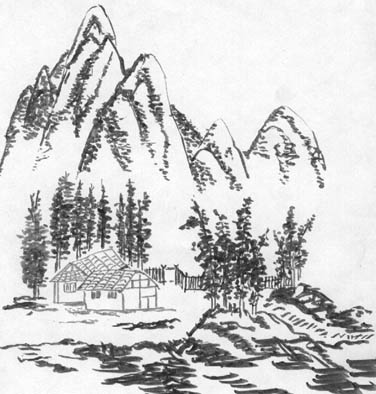
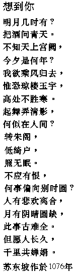

Archives : 2003-09
...... @ Sep 30, 2003
那是一幕丑陋的话剧，拙劣的瞬间……苍白而无力，我观看的比你、你们都要感到压迫、疲惫且冰冷，无泪。你不是一个精彩的表演者，戏演砸了……
而另一幕正在上演的，仍然是相同的地点和内容也会是一样的结局，无趣。只有表演者自己乐此不疲，不要再拿你低劣的演技来欺骗观者，惟有戏票是昂贵的，没有收藏价值。

A man story of…...
love hotel @ Sep 30, 2003
love hotel 秋的别馆.mp3 周华健 – 一起吃苦的幸福
关上窗隔绝外界纷纷扰攘
静下心听见爱随时间流淌
已是秋凉人去远方
是或非再不用伪装躲藏
那时你直视着我炽热目光
世界不过是咫尺见方
多少次相拥恨不能见一丝希望
告诉自己就荒唐这一场
往日温存只留下苦涩难尝但也已无伤
现在的你会枕在谁的胸膛共看星光
有多久不再对谁敞开心房
这些年岁月划过牵你的手掌
温柔脸庞寂静长廊
记忆中相识的最初模样
我红了眼眶等待天亮在秋的别馆把记忆封了箱
不再想
往日温存只留下苦涩难尝但也已无伤
现在的你会枕在谁的胸膛共看星光
somebody sent me this @ Sep 29, 2003
christina,I made these today and they were yummy ..

1 cup margarine 2 large eggs 1 1/2 cups of white sugar 1 1/2 teaspoons vanilla 1 tablespoon of coffee 2 cups white flour 1/4 cup corn starch 3/4 teaspoon of salt 3/4 teaspoon of baking soda 1 cup of small chocolate chips 1 cup of pecan halves
Using a mixer, mix margarine, sugar, eggs, vanilla, coffee, together and beat for about 1 minute.add the flour, the corn starch and the salt and baking soda, mix those in using the mixer.with a wooden spoon stir in the chocolate chips and pecans.using two cookie sheets one on top of the other, put about 12 drops from a tablespoon onto the top cookie sheet, leaving a bit of space all around each drop bake for about 8 ~10 minutes at 325?F, let cool and then enjoy.A very nice light cookie, with flavor.
Want to give them a try ?????
Cast Away @ Sep 28, 2003
昨晚买了鸭头、凉拌双脆还有公司三明治打包回家作为晚饭，如果边吃边看部法国言情片，是再好不过的事了。最终却选了这部2001年的老片《CAST AWAY》。我坚信有大牌明星参演的片子，一般不会太令人遗憾的。汤姆·汉克斯饰演一位在FEDEX工作作风严谨的业务督导察克·诺兰，负责监督全球各家分支机构的工作效率，这是一个整天飞来飞去的工作，一次公务中飞机在海上意外失事，恰克成了唯一的幸存者，不过也因此流落荒岛，开始了现代“鲁滨逊漂流记”。

察克·诺兰体型肥胖，四年的荒岛生活除了巨大的孤独感之外，也将察克·诺兰的体型改变了，让人怀疑是否使用了电脑技术？据说导演罗伯特特意将影片故事倒着拍，先拍摄恰克获救后的情节，之后罗伯特就给汤姆放了长假去瘦身，等汤姆减了40多磅，剧组再次开工，直到制作完毕。
其中有大量镜头表现美国联邦快递公司FEDEX的标志，由于平时工作中和联邦快递公司有接触所以有那么点亲切感。毋庸质疑这部片子一定是FEDEX赞助的。察克·诺兰在荒岛上还有一个交流的朋友：一个孩子用FEDEX快递邮寄给爷爷的生日礼物WILLSON牌排球。这只排球随着飞机失事和察克·诺兰一起漂流到荒岛上。当察克·诺兰钻木取火不小心把手弄伤时，沮丧的察克·诺兰将身边的东西噼里啪啦的四处乱扔，他的血手印留在WILLSON排球上，于是他在手印上画了个笑脸，这只排球日后成为察克·诺兰的朋友伴随他度过漫漫的四年孤独的荒岛生活。由于察克·诺兰将所有的思想和巨大的孤独感倾注在这只排球上，以至他逃亡海上漂流时WILLSON被海水冲走，察克·诺兰居然跳入水中去救这只排球，他将这只排球赋予了生命和友谊！看到这里真是佩服老美煽情的功力！
看完这部片子，想着是不是要去学点求生的知识，要是把自个儿放在那么一个荒岛上还真不知怎么办呢？意志力薄弱的人很难在无人的荒岛上生存下去。
无题 @ Sep 28, 2003
中午看见新来的女同事坐在办公桌前上网，很多人去吃午饭了，一个PL MM在寂静的中午一个人呆在办公室里尤其显得孤单。想起有人说：“一个女人最痛苦的事情是什么？是让她穿上漂亮的衣服，然后把她关在一个封闭的房子里，那是最让她痛苦的事情。”当这个女孩意识到自己的漂亮，但是又没有人象自己那样去关注的话是很残酷的！自从PL MM来公司后，周围的男同胞突然都变得忙碌起来，我们这个办公室的打印机随之也忙碌起来......因为别的屋打印机坏了，只好用我们的打（每个办公室基本上有2台打印机）。

OFFICE把很多人集中在一起，天天上演着精彩的话剧，剧情里有美丽也有丑陋，我们既是观众也是演员，所谓看戏的是傻子演戏的是疯子，所以我们是傻子和疯子的结合体。有时，我们就象图片中的人一样赤裸裸的，姿势夸张、表情张扬而内心如油彩般油腻斑斓。
有个犀利的家伙说：“嗨，你自甘堕落了？！玩世不恭了？！”与其这么说不如讲不再那么理想化。GRACE写信说她有许多自设的心理障碍，也想试着跨越，要我和她一起去试试看。其实自设心理障碍在某些方面未必是坏事，比如可以给自己的精神世界围个栅栏，好在里面种种喜欢的花草，把自家庭院搞的赏心悦目些。
无题 @ Sep 26, 2003
带着喝多了的工厂党委书记和客人回南京，那些厂长领导喝酒的场面真是汹涌澎湃，在他们看来一场是否圆满愉快的工作饭局要看劝酒与喝酒人的吆喝是否高昂热烈，是否能在吆喝声中把对方搞倒，看似愚昧无聊的行为中其实暗藏着心机与斗智，这就是中国的酒文化吗？把客人送到中心酒店，已是晚上八点一刻。昨天是JIAJIA的生日，拿起直线想打个电话给他，有人正在用只好放下，结果后来就忘记了。今天晚上顺便在新街口逛了逛还是没有发现中意的背包，对不起，搞得我都不好意思和JIAJIA打招呼，只等一切事情办妥才好和他联络。
南京的夜晚俨然比白日要绚丽的多，那些五彩流动的霓虹灯掩盖了建筑造型的陈旧，以及浑浊的空气。逛到东方商城看见一楼新装修好的STARBUCKS咖啡店明天也就是9月26日开业。店面不大，对于南京几百万人口来说似乎面积太小店铺也太少。正如有些品牌在上海卖不掉了拿到南京的柜台来贱卖，实在让人心里不爽！原来南京是如此落后的？


私人开的小店，南京好象有五家连锁。原来有个专卖外贸服装的店叫“古巴”，自从长江路拆迁就不知道搬哪儿去了，那家可以买到诸如裹胸之类特别的、品质和款式也比较好的东西。上海的襄阳路上有家古巴的分店。

梁朝伟的微笑在张曼玉有了新男友之后仍然是那么迷人！
结束逛街活动，打车回家。路上仍然屡教不改地向出租汽车司机提出了违法要求。我主动提出一小时给他50元的报酬，那个先生很爽快的答应了。在此之前我做过调查，开夜班的司机平均每小时挣30元的车费，我多加20元给他，好补偿他承担的风险以及提高他教授我驾驶技巧的积极性。这对南京夜班开出租车的司机来讲自然是具有诱惑的，千万不要将交易的履行与受益者的性别容貌联系在一起，那是中年妇女惯常的思维方式。
从八点四十五分开始驾驶那辆大玩具，直到九点四十五分开回小区后门，转了一个180度的大弯，很有成就感！下车时感觉小腿有点酸，身上都是汗。这次驾驶依然是在十字路口熄火了几次，这才联想到驾校的教练只是让学员开车，从来没教过如何处理十字路口等复杂情况下的操作技巧。停车时往往踩了制动和离合器，档位未回到空档上，这边脚就松开了制动和离合器，车子往前滑，嘎嘎的声音......绿灯亮车子要起步时，也特别让我紧张，找不好离合器的联动点，熄火肯定在所难免。驾校桑塔那车器械使用时比较涩，而出租车的器械反应却非常敏感，比较难控制。今天晚上驾驶实践令自己很受鼓舞，驾驶汽车就是一个熟练的过程。在进拘留所之前我想我不会停止这种非法活动。
片刻白描 @ Sep 22, 2003
城市笼罩在白光中，清净且泛着浓浓的秋意，明天就是秋分，俗话说：“一场秋雨一场寒”。此刻22楼的窗外象极了中国传统的白描，轻而静、色泽单而画面简。
如果
我的家在大山中
就在我房子的四周
建一圈木栅栏
再铺一条石板路
通向清清的溪水边

家
温暖
幽静
是否也要加上
诗意
性就是爱 @ Sep 16, 2003
作者：洪峰
时间进入九十年代，年轻人在中国获得了六十年代的美国青年的个性自由。在美国，女权运动产生了“性解放”浪潮；在中国，则是经济搞活导致性开放，两种不同理由的同一种现实，只有留给时间自己去结论出优优劣劣。
在中国，十七八岁的少男少女已经很熟练地谈情说爱，成双成对出入体育场卡拉OK西餐馆已经成为时尚，随之而来的，是爱情的肉体实践。
据一家杂志的调查数字，可以知道十八岁以上的少男少女有性经历的占64.6%，十八岁以下有性经历的占32.4%。这个数字很惊人，它意味着一个新时代的突然降临。在未来的婚姻中，中国男性将面临全新的性爱观的挑战。它意味着，未来的少女再没有“守宫砂”，“处女膜”的约束。是否拥有过另外的男人和女人已不再是判断爱情的标准。你所面对的恋人或深或浅或多或少曾经爱过或者做爱过，你接受的只能是现在的恋人，你必须放弃“纯洁”这个概念的原始含义，把“纯洁”理解成“此时此刻”她（他）真心爱地我。”
不管你愿意与否，九十年代之后的中国道德观要在爱情的肉体实践中改变了。古典爱情在当今中国只是人们对历史的一种回忆和对未来的梦想，从一而终或者“孔雀东南飞，十里一徘徊”演变成现代人瞬间欢娱的誓言。说过也就算了，哪个当真，哪个就要饱尝失恋之苦了。
作为一个曾经结婚又有了孩子的男性，我对婚前的爱情没有具体到性的感觉，现在想来也不能说是吃亏，一个人拥有的生命方式用不着和前人和后人去比较，怎么爱都可能爱得快乐或者痛苦。我从心里祝愿少男少女在实践中培养出丰富的心灵感受，不是其他。
一个在 十六七岁时就有过性行为的姑娘对我说：“对付那些男人？我可以让他们神魂颠倒。”
这话我信，但我也想告诉这个姑娘，男人在那种时刻都神魂颠倒，但是更多的时候神清气爽。那之后怕就怕神魂颠倒的人是姑娘自己了。我猜姑娘把爱和性分裂了，许多人都把爱和性分裂了。分裂的结果是有了性就以为有了爱，也误以为对方同样爱，要么相反。不论哪一种情形，都容易把性当成爱的手段和标准，人不知不觉变成性机器，于是有假装高潮来到的表演和......别的。
没人有力量阻止世纪末的中国青年去使用自己的身体寻找爱情，更没有哪一种政策可以使年轻男女压抑原始的欲望。把爱和性真正融合在一起最终要靠他们自己。
比如美国，经历了六十年代的“性解放”之后，一种“新爱情保护主义”在七十年代开始形成，它的含义是“先有爱然后是性，或者，性是爱的最后归宿。
愿意试试后一种吗？
双重印象 @ Sep 15, 2003
满街汽车的嘈杂声
是那永不停息的背景
其间却仍能听见
微弱的鸟鸣
密集的摩天楼
绵延在山与海之间
缝隙中掠过海的波光和远航的船影
更有虬根缠绕的古木们
挣扎地在钢筋水泥的丛林中站定
遥相呼应
巨大的人工的手
怎样揩去自然的痕迹
(9月2日晚，香港，St. John’s College）
YAHOO信箱经常被垃圾信件撑得爆满，去香港读书的GRACE发给我的信被退回，NICK转了GRACE联系我的E-MAIL，后面带着这篇《双重印象》。看见信的一刹那特别想哭，拿起电话打给NICK，留言机的声音，于是等他回电。想起NICK和GRACE，那种熟悉的亲近感涌上来，很温暖。
有关上周五晚上同事过生日的记忆是断裂的、间断性的，这是我接触酒精以来醉的最不省人事的一次。把朋友们描述的场景串起来勾勒出全过程。晚饭后我还清醒着呢，到了OCC十分钟没有一点预兆的就倒下了，那是我第一次去OCC，想不起来那里什么样。直到BESS和DAVID来接我。
周六早晨起来又吐了两次，照镜子发现自己鼻梁正中淤血，轻按，疼。他们说我无法控制一头撞在OCC的洗手台上。那一定是狼狈的，而我觉得自己死了，那是死亡的过程。
忘记看月圆 @ Sep 12, 2003
昨晚忘记看月亮了，据说今年农历八月十五这天凌晨三点多的月亮是最圆的。每年都有月圆的时候，等着看明年的月亮吧！
昨晚和家人在公司附近的金塘大酒店吃晚饭，我点的菜，发现还是点多了。我同事说过我点的菜不错，就是量的控制上没数。当时，我父母用种很意外而高兴的口气对父亲的老朋友张伯伯说道：“今天是我小女儿点的菜，呵呵...她也会点菜了...”？？？？？难道我以前给他们的印象是不会点菜吗？父母看我也戴有色眼镜？不能急了！
晚饭后回家，看电视。南京台和安徽台都在放电视连续剧《玉观音》，以前听人谈论过海岩的小说，在先锋书店也看见很多海岩的书在卖，还是看图象来得快，如今读文字的东西真是奢侈。我觉得我比女主角安心在感情上要顺利的多。就象看《直播南京》、《零距离》还有《新闻60’》等等诸如此类的节目，内容是非常琐碎繁杂的，大多报道的是底层劳动者的生活工作纠纷，看见有的人为了几百元几千元争吵甚至是动手，有人为了几十平米的房子亲人间反目成仇......看着人心酸。当我们对现状不满的时候，可以多看看这类节目，看看别人的生活处境和经历，可以更深刻的体会到“珍惜”二字的意义！
这个周六和周日各预约了两节驾驶课，那么周末的两天每天我要有四个小时坐在驾驶室里。上周日下午上的第一节课，随机约到39号车，教练态度不错，只是他的手指甲太长，不小心剐了我几次，然后就是不停的吸烟。他说开出租车比做教练要辛苦，所以到驾校工作，给学员上一节课他们从驾校获得10元的报酬，有时一天要工作10个小时甚至14个小时。我不能再去想有关的细节，虽然驾校的预约卡上写着：花园般的环境，酒店式的服务。只有到了那儿才知道环境是那么糟糕，开着车窗就会有大片大片的灰尘扑面而来，那些驾校的职员日日月月就工作在这样的环境中。别想别的，珍惜自己的生活吧！
Happy Mid-Autumn Festival @ Sep 11, 2003
“Thinking of You” When will the moon be clear and bright? With a cup of wine in my hand, I ask the blue sky I don’t know what season it would be In the heavens on this night I’d like to ride the wind to fly home Yet I fear the crystal and jade mansions are Much too high and cold for me Dancing with my moon-lit shadow It does not seem like the human world The moon rounds the red mansion Stoops to silk-pad doors Shines upon the sleepless Bearing no grudge Why does the moon tend to be full when people are apart? People may have sorrow or joy, be near or far apart The moon may be dim or bright, wax or wane This has been going on since the beginning of time May we all be blessed with longevity Though far apart, we are still able to share the beauty of the moon together. —Poem written during the night of the Mid-Autumn Festival of 1076Y?by Su Tung Po

央视三套全新电视品牌《星期二唱片街》 @ Sep 03, 2003
刚才看了会儿中央电视台三套7月8日悄然开播的《星期二唱片街》节目，这期采访庾澄庆。哈林日前推出的新专辑《哈林天堂》 中，主打歌《春泥》 是由老婆伊能静填词，他笑说：“其实之前她就在我的专辑中写过几首歌，但是都是用本名吴静怡，现在终于能用伊能静填词”，歌中唱到：
漫天的话语纷乱落在耳际 你我沉默不回应
牵你的手 你却哭红了眼睛 路途漫长无止尽
多想提起勇气 好好地呵护你 不让你受委屈 苦也愿意
那些痛的记忆 落在春的泥土里 滋养了大地 开出下一个花季
风中你的泪滴 滴滴落在回忆里 让我们取名叫做珍惜
迷雾散尽 一切终于变清晰 爱与痛都成回忆 遗忘过去
繁花灿烂在天际 等待已有了结局
我会提起勇气 好好地呵护你 不让你受委屈 苦也愿意
... ...
这首歌的旋律很美,歌词也颇有咀嚼的味道！只是哈林的歌曲之后看见主持人管彤，身着黄衫、浅蓝色牛仔裤，腿缝两侧白色条状的装饰，穿着凉鞋的那双脚丫好象还穿了豆沙色的丝袜。以前看她主持过《同一首歌》、《中国音乐电视》、《音乐电视城》以及《新视听》，我个人认为她的气质、谈吐主持综艺类电视节目很是牵强，形象清淡而柔弱，不够饱满和时尚。管彤的电视形象不知道是她自己设计的还是有专业人士帮她策划，一个人的穿衣品位也能代表这个人对生活的品位追求，主持人整体形象风格体现和代表了她所主持的节目的风格和方向，全中国找不到更好的主持人了吗？这是我第一次看《星期二唱片街》，搞笑的是节目还安排了几个女孩作为明星队成员给嘉宾的歌曲打分评论，听了其中一个女孩的发言，思维不紧密、组织语言的能力比较差，声音垮垮的，用南京话讲：不能急了！哈林坐在台上一个“啊”、两个“啊”的。整个节目里主持人矜持之外，观众也比较矜持，大家好象在上课，节目唯一的亮点只有嘉宾一个人！我知道如此描述我们国家名牌电视台的节目未免刻薄了些，但是，真的真的是不能急了。还有那个修饰的参次不齐的舞台，很担心歌手不小心会在上面摔个跟头，舞美也不咋的。《星期二唱片街》的节目内容应该还是很不错的，只是刚才提到的几处实在是大煞风景。
中央电视台我比较喜欢的电视节目有《艺术人生》、《走进非洲》、《对话》、《小崔说事》、原来的《实话实说》、《极地跨越》《东方时空》等等。其中很喜欢的主持人有：赵琳、蒋梅、田野、黄健翔、崔永元。特别喜欢《极地跨越》节目中的田野，他是我心目中理想的爱人形象！最近看他和一个女孩主持的《走进非洲》，有时我在想田野的女人是什么摸样的？他结婚了吗？和他一同主持节目的女孩会不会也喜欢田野？呵呵~~~喜欢一个人真的不需要理由。其实从小到大我就没追过什么星，更没有偶像，可在电视上见到田野的第一眼就有种亲切感！
田野 《极地跨越》 摄制组报告人
男，1974年12月7日生。
1997年毕业于北京外国语学院西班牙语系，担任中国国际广播电台记者和播音工作。
2000年至2001年赴墨西哥公派留学。